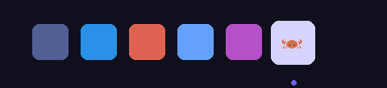
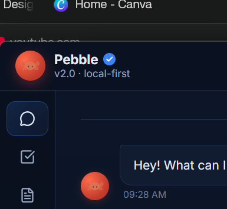
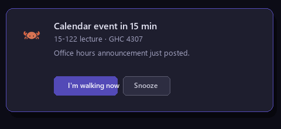
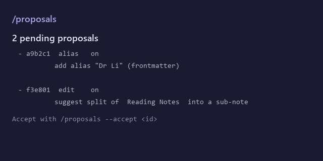
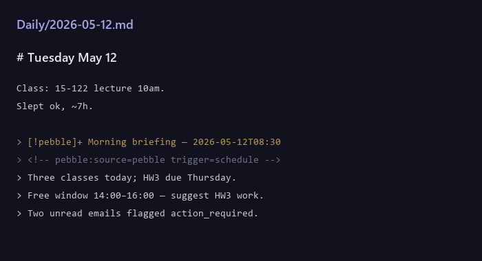
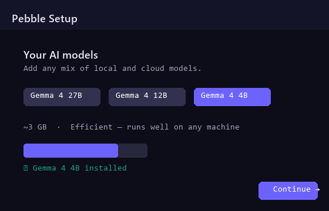

Your AI assistant that thinks ahead.
Pebble reads your calendar and email, drafts your replies, and plans your day. Everything it learns about you lives in your Obsidian vault — plain markdown, editable, portable.
Windows 10 / 11 · v0.3.0 · 63 MB · open source






What it actually does
Pebble runs in the background and initiates. You don't have to prompt it.
Your memory, in plain markdown.
Pebble's memory of you isn't a black box on a remote server. It's a
folder of notes in your Obsidian vault. Every note Pebble writes is
tagged source: pebble so you can see what's yours vs.
what's Pebble's — and edit either freely. Delete a note, and Pebble
forgets.
Proactive, not reactive.
Pebble watches your calendar, email, deadlines, and idle state. Every morning it briefs you. When a class starts in 15 minutes it nudges. When you've been away an hour it doesn't.
Comms triage.
Sorts your inbox into action-required / FYI / ignore. Drafts replies for the messages that need one. You review and send.
Schedule planning.
Looks at today's calendar and what's due this week. Suggests how to use your free windows — not just lists events.
Exam prep.
Tell Pebble the course and the exam date. It reasons backward to a day-by-day study plan grounded in your course notes.
Thinking over your notes.
Weekly cross-domain digests. Monthly pattern detection. Pressure- tests of your decisions. All grounded in what you've written — never on Pebble's own past output.
Connects to what you already use.
Bring your own credentials — Pebble never ships shared OAuth secrets.
 Gmail
Gmail Calendar
Calendar- Obsidian
- Canvas
 GitHub
GitHub Slack
Slack Notion
Notion Spotify
Spotify Discord
Discord- Todoist
 Brave Search
Brave Search- Weather
Plus reminders, journal, focus timer, screenshots, file search, clipboard, news, crypto, Alpaca, Kalshi, and more — full list in the setup guide.
How Pebble thinks.
Not a chatbot. A three-step loop running in the background.
Watch
Background watchers tail your calendar, email, idle state, and vault changes. Each event publishes to an in-process bus.
Reason
Planners subscribe to events and call your cloud model (Claude, GPT, or Gemini), pulling context from your vault. Output is a structured proposal, not freeform chat.
Propose
Every proposal passes through an autonomy layer. AUTO actions run silently. NOTIFY shows a toast. ASK waits for your approval — and the first time Pebble ever does anything, it asks.
Safe to leave running.
Pebble is open source. Read the autonomy layer in
autonomy.py.
Read the threat model in
SECURITY.md.
You're in control.
The first time Pebble ever does anything, it asks. So does the first message to any new recipient. Dry-run mode (default during onboarding) logs every outbound API call as a preview file instead of firing it.
Your notes stay yours.
Vault writes pass through one chokepoint that refuses to
overwrite or strip your content. Notes Pebble writes carry
source: pebble in frontmatter — delete, edit, or
promote freely.
Inspect everything.
Every action is in ~/.pebble/audit.jsonl. Type
/how-am-i-doing in chat for a summary or
/audit for the raw rows. Operational state lives in
~/.pebble/; the knowledge is yours, the bookkeeping is local.
Get started in three steps.
~5 minutes from download to a crab on your taskbar.
Download.
Grab the v0.3.0 zip, extract anywhere, double-click
Pebble.exe.
Pick a model + connect.
The wizard walks you through choosing a model (cloud or local Ollama), connecting Gmail/Calendar via your own Google project, and pointing at your Obsidian vault.
Pebble starts watching.
The crab lands on your taskbar and the watchers spin up. Tomorrow morning, you get a briefing. Tonight, a wrap-up. You didn't have to ask.